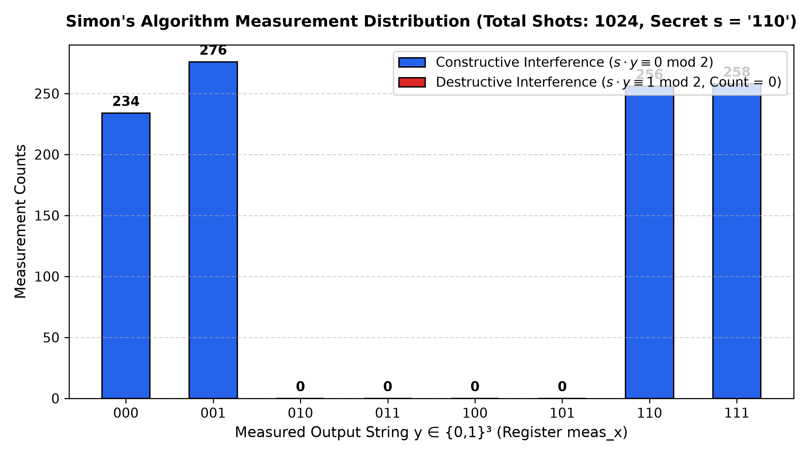
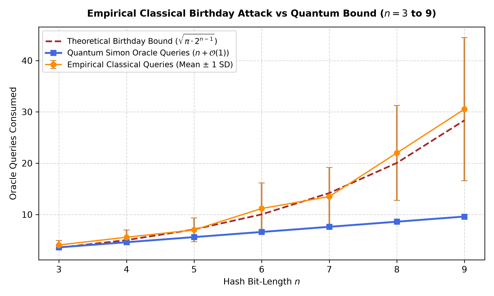
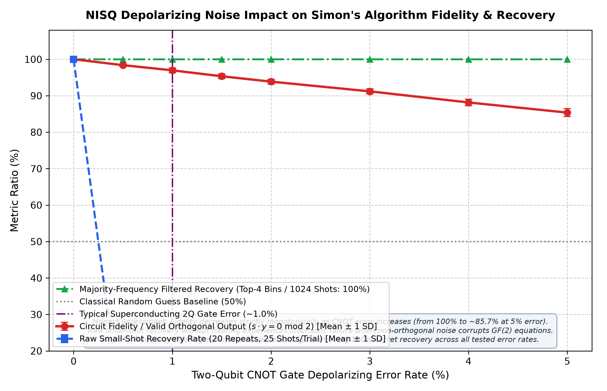
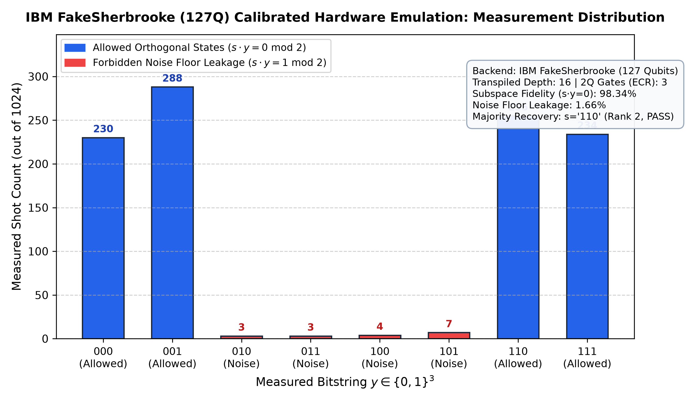

Figure Preview
Caption
A 3-bit hash function secretly satisfies the 2-to-1 promise f(x) = f(x ⊕ s) with hidden period s = 110. Simon's algorithm discovers s with 𝒪(n) quantum queries via constructive and destructive interference, outperforming the classical 𝒪(2n/2) birthday collision attack.
A 2-to-1 function f: {0,1}³ → {0,1}³ where eight inputs map to four outputs. Every output has exactly two preimages differing by the period s = 110.
| x (dec) | x (bin) | f(x) | Partner | XOR diff |
|---|
3 input qubits (x₀, x₁, x₂) prepared in uniform superposition by Hadamard gates, entangled with 3 target qubits (y₀, y₁, y₂) via the reversible oracle Uf (synthesized with 3 CNOT gates: y₀ = x₀, y₁ = x₁ ⊕ x₂), followed by a second Hadamard layer and measurement.
Architecture: 6 qubits (3 input + 3 output) maintain standard black-box cryptographic generality without coordinate leakage. The target register y₂ remains |0⟩ as 4 distinct outputs require 2 active bits.
Track the quantum state evolution and destructive interference across the 8 computational basis states for s = 110.
Each circuit shot measures an outcome y satisfying y · s ≡ 0 (mod 2). Only outcomes {000, 001, 110, 111} can appear due to destructive interference. Two linearly independent non-zero shots uniquely isolate s = 110.
Classical birthday attacks query random inputs sequentially waiting for a collision (𝒪(2n/2)). Simon's quantum algorithm queries superposition states to extract linearly independent parity vectors (𝒪(n)).
| Query # | Queried x | Hash f(x) |
|---|
| Metric | Classical Birthday | Simon's Quantum |
|---|---|---|
| Query Bound | 𝒪(2n/2) | 𝒪(n) |
| n = 3 Expected | 128/35 ≈ 3.657 | (n−1) + 1.61 ≈ 3.61 |
| n = 3 Worst-Case | 5 queries | Probabilistic rank |
| Crossover Point | Classical exceeds quantum at n ≥ 5–6 bits | |
Verification of destructive interference on forbidden measurement outcomes and automated recovery across all 7 non-zero periods.
| y (bin) | s · y mod 2 | Theory | Simulated shots | Interference |
|---|

| Target s | Recovered s | GF(2) Rank | Sampled Equations | Total Queries | Status |
|---|---|---|---|---|---|
001 | 001 | 2 | ['010', '100'] | 12 | PASS (100%) |
010 | 010 | 2 | ['001', '101'] | 12 | PASS (100%) |
011 | 011 | 2 | ['011', '100'] | 12 | PASS (100%) |
100 | 100 | 2 | ['001', '010'] | 12 | PASS (100%) |
101 | 101 | 2 | ['010', '111'] | 12 | PASS (100%) |
110 | 110 | 2 | ['001', '111'] | 12 | PASS (100%) |
111 | 111 | 2 | ['011', '110'] | 12 | PASS (100%) |
Extensive Monte Carlo statistical trials, NISQ depolarizing noise analysis, and physical IBM 127-qubit quantum processor emulation.


Parity Filtering Mechanism: Random bit-flip errors produce measurement outcomes that violate the linear subspace. Gaussian elimination over GF(2) automatically detects inconsistent equations, discarding corrupted samples.

| Bits n | Total Qubits (2n) | Hadamard Gates | Oracle CNOTs | Circuit Depth | GF(2) Post-Processing 𝒪(n³) |
|---|---|---|---|---|---|
| 3 (Toy) | 6 | 6 | 3 | 4 | ~27 operations (< 0.1 ms) |
| 4 | 8 | 8 | 4 | 5 | ~64 operations (< 0.1 ms) |
| 8 | 16 | 16 | 8 | 6 | ~512 operations (< 0.2 ms) |
| 16 | 32 | 32 | 16 | 8 | ~4,096 operations (< 1 ms) |
| 32 | 64 | 64 | 32 | 12 | ~32,768 operations (~5 ms) |
| 64 | 128 | 128 | 64 | 18 | ~262,144 operations (~30 ms) |